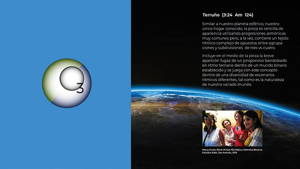

MEDIA: MÚSICA
|
VIDEOS | GALERIA
| CONCIERTOS
INFO: FUNCIÓN | INTEGRANTES | TARIFAS | DISTRIBUCIÓN | RIDER
I N I C I O
INFO: FUNCIÓN | INTEGRANTES | TARIFAS | DISTRIBUCIÓN | RIDER
{kind=link}
I N I C I O

TERRUÑO
(Emilio Mendoza)
Am 124 div. binaria
Similar a nuestro planeta
esférico, nuestro único hogar conocido, la pieza es sencilla
de apariencia utilizando progresiones armónicas muy comunes
pero, a la vez, contiene un tejido rítmico complejo de
opuestos entre agrupaciones y subdivisiones de tres vs cuatro. Incluye en el medio de la pieza la breve
aparición fugaz de un joroponovo
bandoleado en ritmo ternario dentro de un mundo binario
establecido y se juega con este concepto dentro de una
diversidad de escenarios rítmicos diferentes, tal como es la
naturaleza de nuestro variado mundo.
Música
• En YouTube (Audio)
• CD Guarapiche Blues (2020), Cuarteto (guit 6, guit. 12, bajo, maracas)
• En distrokid.com (Audio)
• En YouTube (Audio)
• CD Laberinto Dúo (2017), Dúo (guit 6, guit 12)
• En distrokid.com (Audio)
• En YouTube (Audio)
• CD Natura (2009, 12), Banda (guit 6, 12, 6, voz, sax, bajo, Cb, bat)
• En distrokid.com (Audio)
• En YouTube (Audio)
Comentario • CD OzonoJazz
en Vivo, Concierto
Hotel
Humboldt,
Caracas, 2021
(guit 6, 12, voz, sax, bajo, bat, perc, maracas)
• En distrokid.com
(Audio)(guit 6, 12, voz, sax, bajo, bat, perc, maracas)
• En YouTube (Audio)
• CD Guarapiche Blues (2020), Cuarteto (guit 6, guit. 12, bajo, maracas)
• En distrokid.com (Audio)
• En YouTube (Audio)
• CD Laberinto Dúo (2017), Dúo (guit 6, guit 12)
• En distrokid.com (Audio)
• En YouTube (Audio)
• CD Natura (2009, 12), Banda (guit 6, 12, 6, voz, sax, bajo, Cb, bat)
• En distrokid.com (Audio)
• En YouTube (Audio)
El origen de esta pieza
fue un experimento de composición colectiva, de
improvisación y de composición de estructuras formales. El
bajista Ike hizo una descarga, o improvisación libre,
junto con un amigo baterista, él tocando la guitarra.
Grabó la improvisación en la cual hizo una cantidad de
giros armónicos comunes de la música popular y jazz, una
serie de clichés armónicos. El autor transcribió la
grabación separando los giros armónicos en retazos
autónomos. Luego se seleccionó un grupo de estos giros
armónicos y se juntaron, alargándolos o cortándolos para
darle forma a una secuencia de acordes cuyo sentido fue
finalmente el esquema que arriba se describió: una
plataforma para improvisar un tema, una sección que crece
y otra que se inserta y eventualmente cambia la pieza. Por
tal razón, muchas de las secuencias armónicas pueden sonar
conocidas, porque es material de uso común.
La idea de realizar una pieza con materiales muy comunes surgió del pensamiento musical de lo que es usual, básico, conocido, hasta banal y cliché. Las progresiones que se entrelazaron son pedazos de secuencias armónicas que se encuentran en un gran número de piezas populares, material conocido y esa fue la idea detrás de expresar lo que es hogar, la tierra de uno, el territorio, la casa, el sitio, concepto que tiene que ver con el sentido de afiliación a un sitio, lugar de identidad, seguridad y pertenencia, mezclado con nostalgia y añoranza, grupos, masas, pueblos y ciudades. Luego, se teje una composición con maneja emociones para dar con un resultado interesante a pesar de estar consturido con banalidades. Esa fue la idea. La pieza resultó bastante difícil para tocarla en grupo por sus cambios rítmicos continuos.
La idea de realizar una pieza con materiales muy comunes surgió del pensamiento musical de lo que es usual, básico, conocido, hasta banal y cliché. Las progresiones que se entrelazaron son pedazos de secuencias armónicas que se encuentran en un gran número de piezas populares, material conocido y esa fue la idea detrás de expresar lo que es hogar, la tierra de uno, el territorio, la casa, el sitio, concepto que tiene que ver con el sentido de afiliación a un sitio, lugar de identidad, seguridad y pertenencia, mezclado con nostalgia y añoranza, grupos, masas, pueblos y ciudades. Luego, se teje una composición con maneja emociones para dar con un resultado interesante a pesar de estar consturido con banalidades. Esa fue la idea. La pieza resultó bastante difícil para tocarla en grupo por sus cambios rítmicos continuos.
Videos:
Roraima, con la fotografía de Nico
Abad y la música de Terruño del CD EN VIVO, 2022